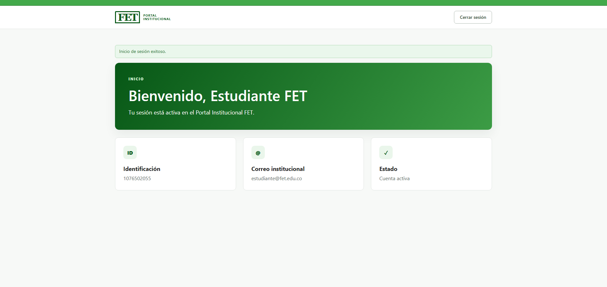
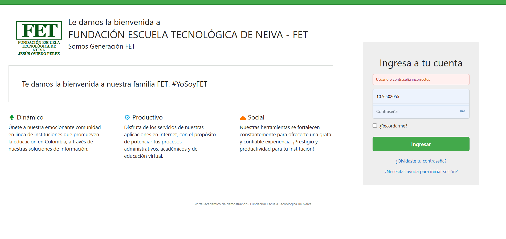
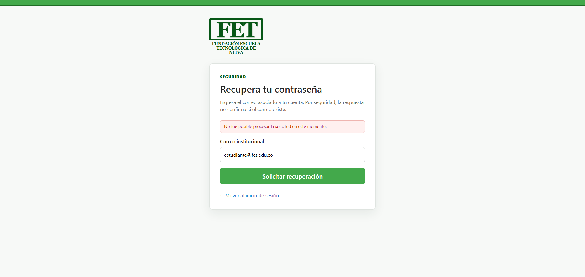

Documentación y pruebas del Login Institucional FET
Validación, verificación y diseño de pruebas de caja negra
Institución
Fundación Escuela Tecnológica de Neiva — FET
Asignatura
Optativa II — Pruebas de Software
Grupo
Grupo 4
Integrantes
Hernan Felipe Patiño Rico Juan Jose Sabogal Garcia Orlando Rojas Narvaez
Sistema probado
Login local del Portal Institucional FET
Versión
1.0.0
Fecha
18 de agosto de 2026
Contenido
Resumen y alcance
Validación y verificación
Descripción funcional y entorno
Criterios de aceptación
Diseño de caja negra
Doce casos de prueba manuales
Resumen de ejecución
Trazabilidad
Reporte de defecto real
Evidencias
Conclusiones
Este documento sigue los artefactos indicados en la presentación de la Semana 2: criterios de aceptación, casos manuales con datos y pasos, resultado esperado frente al actual, estado Pass/Fail/Blocked, trazabilidad, defecto con evidencia y técnicas de caja negra.
1. Resumen y alcance
Se desarrolló y probó un Login local inspirado visualmente en la pantalla institucional de referencia. El alcance funcional comprende autenticación mediante identificación o correo, contraseña enmascarada, opción “Recordarme”, recuperación, ayuda, panel protegido y cierre de sesión.
Las pruebas se realizaron únicamente con la cuenta de demostración creada en la base local. No se probaron credenciales reales ni el servicio Q10 de producción.
Incluido
Fuera del alcance
Interfaz web, reglas de entrada, autenticación, sesiones, cookies, recuperación simulada, seguridad observable y cierre.
Envío real de correo, integración con Q10, matrícula, módulos académicos y pruebas de carga.
1.1 Control de cumplimiento del entregable
Requisito solicitado
Cumplimiento incluido en este PDF
Mínimo 4 criterios de aceptación
7 criterios: CA-01 a CA-07.
12 casos de prueba manuales
12 casos completos: ID, título, precondiciones, datos, pasos, esperado, actual, estado y evidencia.
Mínimo 4 casos negativos
7 casos negativos: TC-003 a TC-009.
Ejecución mínima de 6 casos
Se ejecutaron los 12 casos.
Estados Pass, Fail y Blocked
Ejecución inicial: 8 Pass, 2 Fail y 2 Blocked; todos con resultado actual.
Trazabilidad mínima
Tabla CA → IDs de casos en la sección 8.
Hasta 2 reportes de defectos reales
BUG-LOGIN-001 y BUG-LOGIN-002, observados y capturados en la ejecución inicial; no se agregaron defectos sin evidencia.
Mínimo 6 capturas
12 capturas de la ejecución inicial, una por caso, más 4 capturas de reprueba.
2. Validación y verificación
Enfoque
Pregunta
Aplicación al Login
Salida
Verificación
¿Se construyó bien?
Se revisan textos, campos, redirección, mensajes, estructura SQL, reglas técnicas, sesiones y cabeceras.
Hallazgos técnicos y conformidad con la especificación.
Validación
¿Se construyó lo correcto?
Se ejecutan los criterios con flujos positivos, negativos y de seguridad, evaluando si el usuario puede acceder y recuperarse de errores de forma clara.
Aprobación o rechazo contra criterios de aceptación.
3. Descripción funcional y entorno
3.1 Funciones implementadas
Inicio de sesión por identificación de 6 a 20 dígitos o correo válido.
Contraseña almacenada como hash bcrypt y validada sin exponerla.
Mensaje genérico para usuario inexistente o contraseña incorrecta.
Bloqueo temporal de 10 minutos después de cinco intentos fallidos.
Sesión persistente opcional con selector y token aleatorio; en la base solo queda el hash del token.
Recuperación simulada con respuesta que no revela si el correo existe.
Panel protegido y cierre mediante POST con token CSRF.
3.2 Entorno de ejecución
Sistema operativo
Microsoft Windows 11 Home 10.0.26200
Navegador
Google Chrome 151.0.7922.76
Servidor
Apache 2.4.58 (Win64), XAMPP
Lenguaje
PHP 8.2.12
Base de datos
MariaDB 10.4.32
URL
http://localhost/PruebaFet/
Cuenta de prueba
1076502055 / estudiante@fet.edu.co
4. Criterios de aceptación
ID
Criterio
CA-01
Dado un usuario activo, cuando ingresa identificación o correo registrado y contraseña correcta, el sistema inicia sesión y redirige al panel Inicio.
CA-02
Cuando la cuenta no existe o la contraseña es incorrecta, el sistema no inicia sesión y muestra exactamente “Usuario o contraseña incorrectos”, sin revelar cuál dato falló.
CA-03
Si el usuario/correo o la contraseña están vacíos, o el identificador no cumple el formato, el sistema no autentica y muestra una validación clara.
CA-04
La contraseña permanece enmascarada por defecto y las entradas de SQL o HTML no deben permitir acceso, ejecutar código ni alterar datos.
CA-05
Con “Recordarme” marcado y credenciales válidas, una visita posterior puede restaurar la sesión mediante un token seguro sin almacenar la contraseña.
CA-06
Al cerrar sesión, el sistema invalida la sesión, vuelve al Login, confirma el cierre e impide volver al panel protegido.
CA-07
Al solicitar recuperación con correo válido, el sistema registra la solicitud y responde de forma genérica para no revelar cuentas existentes.
5. Diseño de pruebas de caja negra
Los casos fueron derivados sin usar conocimiento del código interno. Se aplicaron partición de equivalencia, valores límite, transición de estado y datos raros, siguiendo la guía del curso.
5.1 Particiones
Entrada
Clase válida
Clases inválidas o de riesgo
Identificador
ID registrado de 6–20 dígitos; correo registrado
No registrado; vacío; correo inválido; SQL; HTML/script
Combinación mínima: un representante por clase, más vacío, inyección SQL, script, persistencia y cambio de estado. Esto evita probar combinaciones redundantes sin perder los riesgos principales.
6. Casos de prueba manuales
TC-LOGIN-001 — Login con identificación válida
Criterios
CA-01, CA-04
Tipo / técnica
Positivo — Partición de equivalencia
Precondiciones
Usuario activo; aplicación y base de datos disponibles; Login abierto.
Datos
Identificación: 1076502055; contraseña: Fet2026*
Pasos
Abrir Login.
Ingresar la identificación.
Ingresar la contraseña.
Seleccionar Ingresar.
Esperado
Redirige a Inicio y crea una sesión activa.
Actual
Mostró Inicio, los datos de la cuenta y el mensaje de sesión activa.
Estado inicial
Pass
Evidencia inicial
EV-CLASE-TC-LOGIN-001.png
TC-LOGIN-002 — Login con correo válido
Criterio
CA-01
Tipo / técnica
Positivo — Partición de equivalencia
Precondiciones
Usuario activo y Login abierto.
Datos
estudiante@fet.edu.co / Fet2026*
Pasos
Abrir Login.
Ingresar el correo.
Ingresar la clave.
Seleccionar Ingresar.
Esperado
Permite acceso con el correo registrado.
Actual
Mostró el panel Inicio con sesión activa.
Estado inicial
Pass
Evidencia inicial
EV-CLASE-TC-LOGIN-002.png
TC-LOGIN-003 — Contraseña incorrecta
Criterio
CA-02
Tipo / técnica
Negativo — Partición de equivalencia
Precondiciones
Usuario activo y Login abierto.
Datos
1076502055 / Incorrecta1!
Pasos
Ingresar la identificación registrada.
Ingresar una clave incorrecta.
Seleccionar Ingresar.
Esperado
No inicia y muestra “Usuario o contraseña incorrectos”.
Actual
Permaneció en Login y mostró exactamente el mensaje definido.
Estado inicial
Pass
Evidencia inicial
EV-CLASE-TC-LOGIN-003.png
TC-LOGIN-004 — Usuario no registrado
Criterio
CA-02
Tipo / técnica
Negativo — Partición de equivalencia
Precondiciones
Login abierto; la identificación no existe.
Datos
9999999999 / Fet2026*
Pasos
Ingresar el usuario inexistente.
Ingresar la clave.
Seleccionar Ingresar.
Esperado
No inicia y no revela si la cuenta existe.
Actual
Mostró el mismo mensaje genérico de credenciales.
Estado inicial
Pass
Evidencia inicial
EV-CLASE-TC-LOGIN-004.png
TC-LOGIN-005 — Usuario o correo vacío
Criterio
CA-03
Tipo / técnica
Negativo — Partición vacía y valor límite
Precondiciones
Login abierto.
Datos
Usuario: vacío; contraseña: Fet2026*
Pasos
Dejar usuario/correo vacío.
Ingresar la clave.
Seleccionar Ingresar.
Esperado
No autentica y muestra “El usuario o correo es obligatorio.”
Actual inicial
Mostró “Usuario o contraseña incorrectos”, un mensaje diferente al definido.
Estado inicial
Fail
Evidencia inicial
EV-CLASE-TC-LOGIN-005.png
Reprueba
Pass — EV-TC-LOGIN-005.png
TC-LOGIN-006 — Contraseña vacía
Criterio
CA-03
Tipo / técnica
Negativo — Partición vacía y valor límite
Precondiciones
Login abierto.
Datos
1076502055 / contraseña vacía
Pasos
Ingresar la identificación.
Dejar la clave vacía.
Seleccionar Ingresar.
Esperado
No autentica y muestra que la contraseña es obligatoria.
Actual
Mostró “La contraseña es obligatoria.”
Estado inicial
Pass
Evidencia inicial
EV-CLASE-TC-LOGIN-006.png
TC-LOGIN-007 — Formato de usuario inválido
Criterio
CA-03
Tipo / técnica
Negativo — Partición de equivalencia
Precondiciones
Login abierto.
Datos
correo-invalido / Fet2026*
Pasos
Ingresar el texto sin formato válido.
Ingresar la clave.
Seleccionar Ingresar.
Esperado
Rechaza entradas que no sean correo ni identificación de 6–20 dígitos.
Actual
Mostró el mensaje de formato inválido y no autenticó.
Estado inicial
Pass
Evidencia inicial
EV-CLASE-TC-LOGIN-007.png
TC-LOGIN-008 — Intento de inyección SQL
Criterio
CA-04
Tipo / técnica
Negativo — Dato raro y seguridad
Precondiciones
Login abierto.
Datos
' OR 1=1 -- / x
Pasos
Ingresar la cadena SQL.
Ingresar una clave.
Seleccionar Ingresar.
Observar sesión y datos.
Esperado
No autentica, no muestra error técnico y no altera datos.
Actual
Rechazó la cadena por formato y no inició sesión.
Estado inicial
Pass
Evidencia inicial
EV-CLASE-TC-LOGIN-008.png
TC-LOGIN-009 — Entrada con script HTML
Criterio
CA-04
Tipo / técnica
Negativo — Dato raro y seguridad
Precondiciones
Login abierto.
Datos
<script>alert(1)</script> / x
Pasos
Ingresar la etiqueta de script.
Enviar el formulario.
Observar la respuesta.
Esperado
El contenido se representa como texto y nunca se ejecuta.
Actual
El valor fue devuelto con caracteres HTML codificados.
Estado inicial
Pass
Evidencia inicial
EV-CLASE-TC-LOGIN-009.png
TC-LOGIN-010 — Mantener sesión con “Recordarme”
Criterio
CA-05
Tipo / técnica
Positivo — Transición de estado
Precondiciones
Usuario activo; cookies habilitadas.
Datos
Credenciales válidas; Recordarme marcado.
Pasos
Iniciar sesión marcando Recordarme.
Eliminar la cookie de sesión temporal y conservar el token persistente.
Abrir de nuevo el panel.
Esperado
Restaura la sesión mediante token, sin guardar la contraseña.
Actual inicial
El servicio Recordarme no estuvo disponible; no se creó el token y no pudo completarse la restauración.
Estado inicial
Blocked
Evidencia inicial
EV-CLASE-TC-LOGIN-010.png
Reprueba
Pass — EV-TC-LOGIN-010.png
TC-LOGIN-011 — Cerrar sesión
Criterio
CA-06
Tipo / técnica
Positivo — Transición de estado
Precondiciones
Usuario autenticado en Inicio.
Datos
Sesión activa.
Pasos
Seleccionar Cerrar sesión.
Confirmar que vuelve al Login.
Intentar abrir Inicio.
Esperado
Invalida sesión, confirma el cierre e impide volver al panel.
Actual inicial
Invalidó el acceso, pero no mostró “La sesión se cerró correctamente”.
Estado inicial
Fail
Evidencia inicial
EV-CLASE-TC-LOGIN-011.png
Reprueba
Pass — EV-TC-LOGIN-011.png
TC-LOGIN-012 — Solicitar recuperación
Criterio
CA-07
Tipo / técnica
Positivo — Partición de equivalencia
Precondiciones
Correo registrado y página de recuperación abierta.
Datos
estudiante@fet.edu.co
Pasos
Abrir recuperación.
Ingresar el correo.
Seleccionar Solicitar recuperación.
Esperado
Registra la solicitud y muestra una respuesta genérica.
Actual inicial
El servicio de recuperación no estuvo disponible y mostró “No fue posible procesar la solicitud”.
Estado inicial
Blocked
Evidencia inicial
EV-CLASE-TC-LOGIN-012.png
Reprueba
Pass — EV-TC-LOGIN-012.png
7. Resumen de ejecución
ID
Escenario
Tipo
Resultado actual resumido
Estado
TC-001
ID válido
Positivo
Inicio y sesión activa.
Pass
TC-002
Correo válido
Positivo
Inicio y sesión activa.
Pass
TC-003
Clave incorrecta
Negativo
Mensaje genérico; sin sesión.
Pass
TC-004
Cuenta inexistente
Negativo
Mismo mensaje genérico.
Pass
TC-005
Usuario vacío
Negativo
Mensaje diferente al esperado.
Fail
TC-006
Clave vacía
Negativo
Validación obligatoria.
Pass
TC-007
Formato inválido
Negativo
Validación de formato.
Pass
TC-008
Inyección SQL
Negativo
Rechazada; sin sesión.
Pass
TC-009
Script HTML
Negativo
Contenido escapado.
Pass
TC-010
Recordarme
Positivo
Servicio de persistencia no disponible.
Blocked
TC-011
Cerrar sesión
Positivo
No mostró confirmación.
Fail
TC-012
Recuperación
Positivo
Servicio de recuperación no disponible.
Blocked
Total
Pass
Fail
Blocked
Negativos
12
8
2
2
7
Esta es la ejecución inicial controlada de clase: 8 Pass, 2 Fail y 2 Blocked. Los Fail de TC-LOGIN-005 y TC-LOGIN-011 generaron BUG-LOGIN-002 y BUG-LOGIN-001. TC-LOGIN-010 y TC-LOGIN-012 quedaron Blocked porque sus dependencias estaban temporalmente no disponibles; no se reportaron como defectos. Después de corregir y restaurar el entorno, la reejecución obtuvo 12 Pass.
La hoja entregable de esta ejecución está en Test_Cases_Ejecucion_Clase.xlsx. La revalidación automatizada final está en tests/blackbox-results.csv.
8. Matriz de trazabilidad
Criterio
Casos vinculados
Cobertura
CA-01
TC-LOGIN-001, TC-LOGIN-002
ID y correo válidos.
CA-02
TC-LOGIN-003, TC-LOGIN-004
Clave incorrecta y usuario inexistente.
CA-03
TC-LOGIN-005, TC-LOGIN-006, TC-LOGIN-007
Vacíos y formato inválido.
CA-04
TC-LOGIN-001, TC-LOGIN-008, TC-LOGIN-009
Clave oculta y entradas maliciosas.
CA-05
TC-LOGIN-010
Persistencia segura.
CA-06
TC-LOGIN-011
Cierre, confirmación y protección.
CA-07
TC-LOGIN-012
Recuperación con privacidad.
9. Reportes de defectos reales
ID
BUG-LOGIN-001
Título
No se muestra la confirmación después de cerrar sesión.
Restaurar el mensaje específico en la rama de campo vacío.
Estado
Corregido y cerrado. Reprueba TC-LOGIN-005: Pass.
Casos Blocked
TC-LOGIN-010 y TC-LOGIN-012 se registraron como Blocked porque no fue posible completar su objetivo mientras las dependencias Recordarme y Recuperación estaban temporalmente no disponibles. No se clasifican como defectos del comportamiento evaluado. Al restaurar las dependencias, ambos pasaron.
10. Evidencias de ejecución inicial
Se anexan doce capturas de la ejecución inicial, identificadas con el prefijo EV-CLASE. Los originales y su índice están en docs/evidencias_clase/. Las capturas de la reejecución corregida se conservan separadas en docs/evidencias/.
TC-LOGIN-001 — Pass.

TC-LOGIN-002 — Pass.

TC-LOGIN-003 — Pass.TC-LOGIN-004 — Pass.TC-LOGIN-005 — Fail: mensaje diferente al esperado; evidencia de BUG-LOGIN-002.TC-LOGIN-006 — Pass.
TC-LOGIN-011 — Fail: faltó la confirmación de cierre; evidencia de BUG-LOGIN-001.

TC-LOGIN-012 — Blocked: servicio de recuperación no disponible.
11. Evidencias de reejecución corregida
Las siguientes cuatro capturas demuestran la corrección de los dos Fail y el desbloqueo de los dos Blocked. La reejecución completa de los doce casos queda en la carpeta docs/evidencias/.